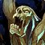
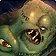
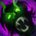

邪恶死骑 PvP 判断训练器
你的活是让对面从被缠上那一刻起，就一直在掉血、一直补不满。


为什么？这个专精的伤害有一半不在你手上疫病 + 召唤物，两样都要先铺好▸战士的伤害全在自己身上，开了窗口就能兑现。邪恶不一样——疫病在对方身上走、召唤物在场上打，这两部分加起来占了你伤害的很大一块。
所以邪恶的准备动作比别的专精重：病没铺满，
该不该开？勾一下就知道
勾掉几条，就有多少胜算。
三个时钟
邪恶的节奏挂在这三个数字上。
引爆脓疮之伤并召唤次级食尸鬼，这是邪恶的爆发起点。
战士的窗口靠增伤撑开，邪恶的窗口靠召唤物堆叠撑开——所以它比战士更怕被打断节奏：宠物打不到人，窗口就是空的。

控制时钟 · 沉默与昏迷两种控制，两套递减▸这意味着你可以先沉默再昏迷，不互相缩短。沉默留给治疗读条，昏迷留给需要人彻底动不了的时候。
对面法系多的时候，护罩几乎是免疫。但它冷却比冰封短，所以护罩是常规牌、冰封是保命牌。
本版定盘（top50 三对三实测）
天启骑手（Rider of the Apocalypse）——top50 三对三里 50 人全用，圣血（San'layn）是 0。这不是「推荐」，是唯一解。
所以英雄天赋那 28 格不用逐格纠结：跟着这条线走，格子自己就定了。
Necrotic Wounds（50/50）——全员必带。它让你的疫病顺带完成减疗，不用额外花 GCD，这是邪恶比战士省手法的地方。
Spellwarden（41/50）抗法术、
三格 50 人 = 150 个选择，上面四项占了其中 141 个。